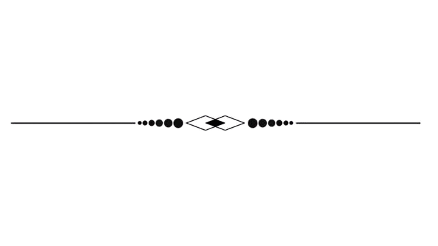

Bienvenido a Ciudad Cairo, un enclave único y enigmático ubicado en el corazón de un bosque denso y vibrante. Esta ciudad, establecida como un puesto de avanzada, es un refugio para aquellos que buscan un equilibrio entre la modernidad y la naturaleza. Fundada por un viajero visionario, Ciudad Cairo combina elementos de urbanización sostenible con el profundo respeto por la flora y fauna locales, creando un lugar de armonía y comunidad.
Ciudad Cairo no es solo un lugar de descanso, sino un destino donde la naturaleza y la comunidad se entrelazan en una danza de vida y crecimiento. Aquí, cada habitante tiene una historia única, contribuyendo al vibrante tapiz de esta ciudad en el corazón del bosque.

Nombre: Andrés
Edad: 59 /Lugar de nacimiento: Ciudad /Profesión: Musico Contexto: Criado de pequeño con un grookey, ha aprendido todo sobre la música, haciendo pequeños conciertos callejeros. Sentimiento: Determinado y Melancólico Comportamiento: se entrega por completo a su música y enseñanza. Cuando toca su instrumento o enseña a los niños, su pasión es palpable. No se conforma con mediocridades; siempre busca la excelencia. Necesidades: Reconocimiento/Ubicación: la escuela Lore: Nació en una familia pobre, cantaba en calles y plazas para sobrevivir. Ahorro lo suficiente para viajar y conoció al viajero, quien lo invitó a unirse a la nueva ciudad. Ahora, enseña música en la escuela.
Nombre: Nacho
Edad: 44/Lugar de nacimiento: Bosque/Profesión: Leñador Contexto: Un señor respetado por los de su pueblo por lograr cosas en su vida luego de nacer en la nada misma, y siempre ayudar. Sentimiento: Curioso y determinado Comportamiento: Observa detenidamente el bosque, estudia su ecosistema y considera cuidadosamente cada paso que da. Su enfoque reflexivo le permite encontrar soluciones creativas y sostenibles. Necesidades: Conexión con la Naturaleza/Ubicación: tercera casa arriba Lore: Viene de una familia de leñadores. Fue reclutado por el viajero para urbanizar el bosque sosteniblemente. Dirige la tala sostenible junto al chamán. Actualmente se encarga de dirigir la tala sostenible para avanzar con la urbanización en conjunto con el chaman.
Nombre: Althea
Edad: 77/Lugar de nacimiento: Bosque/Profesión: Curandera Contexto: Curandera, se ha dedicado toda su vida a buscar plantas medicinales para uso humano y Pokémon. Sentimiento: Empatía Comportamiento: Althea trata a las plantas y a los Pokémon con respeto. Recolecta solo lo que necesita y siempre agradece a la naturaleza por sus dones. Nunca daña el ecosistema. Necesidades: Conexión con la Tierra, ayudar/Ubicación: enfermería Lore: Nacida en un bosque, estudió plantas medicinales desde joven. Heredó el sueño de su padre de mejorar medicinas. Conoció a un enfermero con quien se casó y se establecieron en el puesto de avanzada
Nombre: Raúl
Edad: 35/Lugar de nacimiento: Campo/Profesión: Forajido Contexto: Un buen hombre con un buen corazón, pero bajo malas influencias que lo han llevado a hacer horrores. Sentimiento: Remordimiento Comportamiento: Como forajido, Raúl ha desarrollado habilidades para moverse en las sombras. Es astuto, observador y siempre un paso adelante de sus enemigos. Necesidades: Compañía/Ubicación: 1ra casa abajo a la izquierda Lore: Con un gran corazón, se dejó influenciar por malas personas y terminó siendo un forajido. Conoció al viajero, quien lo invitó a construir un lugar seguro.
Nombre: Papin
Edad: 39/Lugar de nacimiento: Pueblo pequeño/Profesión: Retirado Contexto: Un entrenador Pokémon del ejercito retirado, al acabar la guerra entre ciudades se retiró al campo a vivir libre con sus Pokémon. Sentimiento: Nostalgia y Paz Interior Comportamiento: La disciplina militar sigue presente en Leandro. Cuida meticulosamente de sus Pokémon, entrenándolos con rigor y protegiéndolos en todo momento. Su mirada es firme pero compasiva. Necesidades: Libertad y paz/Ubicación: 1ra casa arriba a la izquierda Lore: Veterano de una guerra entre ciudades, se retiró buscando paz con sus Pokémon. Se estableció en el puesto de avanzada en busca de tranquilidad.
Nombre: Octavio
Edad: 55/Lugar de nacimiento: Ciudad/Profesión: Profesor de Química Contexto: profesor de química que comienza a hacer pastillas por diversión. Sentimiento: Cautela y Curiosidad Comportamiento: Dr. Octavio sigue el método científico como un pasatiempo. Su laboratorio casero es un refugio. Necesidades: Explorar límites. Buscar perfección/Ubicación: escuela Lore: Profesor de química, se interesó en la ciencia y la química. Encontró un bosque rico en materiales y se estableció en la nueva ciudad para continuar sus experimentos.
Nombre: Kai
Edad: 32/Lugar de nacimiento: Campo/Profesión: Agricultor Contexto: De menor trabaja en las plantaciones de la familia. Sentimiento: Esperanza y Paciencia Comportamiento: Estudia las estaciones, los ciclos de crecimiento y las necesidades de cada cultivo. Sabe cuándo regar, cuándo podar y cómo mantener el equilibrio en el ecosistema agrícola. Necesidades: Conexión/Ubicación: 2da casa abajo Lore: Trabajó en la agricultura desde pequeño. Decidió buscar un lugar con abundante cosecha y se estableció en el bosque, orgulloso de su herencia agrícola.
Nombre: Yuki
Edad: 74/Lugar de nacimiento: Montaña/Profesión: Científico Contexto: El científico de la minería dedicado a el análisis de los diferentes materiales. Sentimiento: Preocupación por el ambiente. Comportamiento: Investiga nuevas técnicas, busca patrones en los datos y se sumerge en la literatura científica. Necesidades: Avances Tecnológicos/Ubicación: escuela Lore: Científico especializado en minerales, buscó mejorar la vida en su pueblo. Se estableció en el pueblo Cairo por su cercanía al bosque y la montaña, colaborando con Octavio.
Nombre: Aelius
Edad: 90/Lugar de nacimiento: Bosque/Profesión: Chaman Contexto: maldice a quien entre a sus dominios, ama a los Pokémon fantasma. Sentimiento: Empatía por los Espíritus Comportamiento: Aelius vive apartado en los rincones más oscuros del bosque. Observa a quienes se aventuran en sus dominios, evaluando sus intenciones. Su mirada es penetrante y su presencia inquietante. Necesidades: Conexión con Pokemons/Ubicación: Bosque Lore: Último descendiente de una tribu dedicó su vida a proteger la naturaleza. El viajero le prometió no explotar el bosque y Aelius se convirtió en su amigo y consejero.
Nombre: Valentina
Edad: 26/Lugar de nacimiento: Ciudad/Profesión: Profesora Contexto: Experta en el área de las matemáticas, logro una posición como profesora a una edad temprana. Sentimiento: Pasión por las Matemáticas y orgullo Comportamiento: investiga constantemente. Busca nuevas formas de presentar conceptos matemáticos. Necesidades: Seguir creciendo como educadora/Ubicación: escuela Lore: Profesora de matemáticas, soñaba con influir en futuras generaciones. Se unió al proyecto del viajero para enseñar en la escuela del pueblo Cairo.
Nombre: Don Pedro
Edad: 48/Lugar de nacimiento: Ciudad/Profesión: Vendedor Contexto: Hombre que tiene su pequeño negocio en un vecindario. Sentimiento: Orgullo por su Negocio, Nostalgia y Melancolía. Comportamiento: Don Pedro es un vendedor amigable. Saluda a todos con una sonrisa y está dispuesto a charlar sobre cualquier tema relacionado con Pokémon. Necesidades: Conexión con la Comunidad/Ubicación: store Lore: Cansado de la vida en la ciudad, conoció al viajero y decidió establecer una tienda en el pueblo Cairo para una vida más tranquila
Nombre: Shin
Edad: 33/Lugar de nacimiento: Campo/Profesión: Exterminador Contexto: Dependiendo de lo que le pagues trabajará mejor o peor exterminando lo que tú pidas. Sentimiento: Pacifico y alegre. Comportamiento: Trabaja de manera apasionada cuando se trata de exterminar fuera del trabajo es calmado aún que con comportamientos esquizofrénicos. Necesidades: Comida y trabajo/Ubicación: puesto cerca de las casas Lore: Cansado de la vida en la ciudad, decidió mudarse a un lugar más tranquilo y se encontró con el viajero, quien lo llevó al pueblo Cairo.
Nombre: Garret
Edad: 19/Lugar de nacimiento: Pueblo/Profesión: Guardia Contexto: Debido a su increíble fuerza, es el encargado de proteger la aldea de posibles ataques. Sentimiento: Responsabilidad y Determinación Comportamiento: Garret patrulla los límites de la aldea, siempre alerta. Sus ojos escudriñan el horizonte en busca de amenazas. No permite distracciones; su deber es proteger. Necesidades: Entrenamiento Constante y Conexión/Ubicación: puesto Lore: Desde niño, Garret trabajó duro para ser guardián del pueblo. Designado por el viajero, ahora protege Cairo con dedicación.
Nombre: Vicente
Edad: 39/Lugar de nacimiento: Ciudad/Profesión: Payaso Contexto: Hombre que trabaja en un circo, suele viajar en ciudad en ciudad para dar shows. Sentimiento: Alegría y Empatía. Comportamiento: Risueño es un maestro de la comedia. Puede hacer malabares, contar chistes, pintar caras y bailar torpemente. Su traje colorido y su nariz roja son su segunda piel. Necesidades: Aprobación y Reconocimiento/Ubicación: escuela Lore: Vicente se convirtió en payaso para alegrar a su madre deprimida. Tras su fallecimiento, descubrió su pasión por hacer reír a otros.
Nombre: Arturo
Edad: 50/Lugar de nacimiento: Pueblo/Profesión: Panadero Contexto: vive feliz haciendo pan y dulces desde que era pequeño, su familia le heredó la panadería y le gusta su vida tranquila. Sentimiento: Felicidad y Satisfacción. Comportamiento: Arturo conoce a sus clientes por nombre. Saluda a todos con una sonrisa y comparte historias mientras les entrega sus pedidos. Necesidades: Paz y Tranquilidad/Ubicación: 2da casa arriba Lore: Criado por su abuela, Arturo se enamoró de la panadería. Ahora, con su propia tienda en Cairo, comparte las recetas familiares con amor.
Nombre: Karla
Edad: 20/Lugar de nacimiento: Campo/Profesión: Exterminadora Contexto: Es una mujer carismática que le gusta pelear contra criaturas sobrenaturales con sus extrañas y extravagantes armas. Sentimiento: Soledad y Desapego Comportamiento: Valeria estudia a sus enemigos antes de atacar. Necesidades: Encontrar un propósito/Ubicación: puesto cerca del rio Lore: Harta de su vida de exterminadora, Karla escapó con su esposo. Ahora, en Cairo, se encargan de la seguridad del pueblo.
Nombre: Valentín
Edad: 35/Lugar de nacimiento: Campo/Profesión: Enfermera Contexto: Enfermera de un hospital de Providencia que a cada rato se manda cagadas. Sentimiento: Empatía y Compasión Comportamiento: enfermera que hace reír a los pacientes. Canta mientras toma muestras de sangre, bromea con los médicos y se olvida de las dosis de medicamentos. Su personalidad despreocupada es su sello distintivo. Necesidades: Aprender de sus Errores/Ubicación: enfermería Lore: A pesar de su personalidad despreocupada, Valentín sueña con mejorar la vida de humanos y Pokémon. Trabaja como enfermero en Cairo.
Nombre: Alex
Edad: 32/Lugar de nacimiento: Pequeña isla/Profesión: Viajero Contexto: No vive en un lugar fijo ya que viaja, y en sus viaje busca conocer la mayor cantidad de Pokémon y gente, también encontrarse a sí mismo. Sentimiento: Nostalgia y Anhelo. Comportamiento: se acerca a la gente con facilidad. Comparte historias. Su carisma le permite hacer amigos en cada lugar que visita. Necesidades: Autoconocimiento y Crecimiento/Ubicación: escuela Lore: Viajero incansable, Alex busca el lugar perfecto para asentarse. Su experiencia lo llevó a fundar y liderar el puesto de avanzada en Cairo.
Nombre: Carlos
Edad: 25/Lugar de nacimiento: Ciudad/Profesión: Cajero Contexto: Estudió Ing. en Videojuegos, acabó frustrado trabajando en Mc Donald. Sentimiento: Frustración y Optimismo Comportamiento: Carlos es rápido en la caja registradora. agradece a los clientes con una sonrisa. Necesidades: Comunidad y Apoyo/Ubicación: store Lore: Después de estudiar sin éxito laboral, Carlos se convirtió en cajero. Aunque frustrado, decidió ser el mejor en su trabajo.
Nombre: Diego
Edad: 31/Lugar de nacimiento: Ciudad/Profesión: Delivery Contexto: Debido a la situación económica tuvo que emigrar de su país y actualmente trabaja como repartidor de comida rápida. Sentimiento: Nostalgia y Esperanza Comportamiento: Diego entrega los pedidos con rapidez. Saluda a los clientes con una sonrisa y se asegura de que todo esté en orden. Su trato amigable es su sello distintivo. Necesidades: Estabilidad Económica/Ubicación: store Lore: Debido a la difícil situación económica en su país, emigró y se convirtió en repartidor en Pueblo Cairo. Mantiene a su familia enviándoles dinero.
Características y su Representación en la ciudad.
Puestos de Avanzada:
Entorno:
Servicios y Amenidades:
Diálogos
"Hey, si ves al viejo militar retirado, dile que sigo siendo el mejor en el bosque. Aunque a veces extraño la vida tranquila de la ciudad."
"El forajido tiene sus trucos, pero nada se compara con la disciplina de mis años de servicio. Ah, y cuidado con esos Pokémon bicho, pueden ser bastante traviesos."
"Mi pareja está en el otro extremo del pueblo, pero juntos mantenemos a los bichos bajo control. ¡No hay nada más satisfactorio que proteger nuestra ciudad!"
"Trabajando con mi pareja, hemos encontrado formas más eficaces de tratar con los Pokémon bicho. A veces lo extraño, pero sabemos que esto es por el bien de todos."
"El bosque nos habla, y yo escucho. La pareja de exterminadores es vital, pero siempre me aseguro de que los Pokémon sean respetados."
"El viajero y yo fundamos este lugar con la idea de crear un refugio en el bosque. Es un trabajo duro, pero verlo crecer ha sido una gran satisfacción. Protejo a nuestros ciudadanos y a nuestros Pokémon. Es un honor servir en esta ciudad que tanto significa para mí."
"Esta ciudad es un sueño hecho realidad. Junto con el guardia, la hemos convertido en un lugar de descanso y aventura para todos."
"Mi investigación sobre los Pokémon bicho ha avanzado gracias al apoyo del profesor y al entorno único de nuestro pueblo."
"Trabajar junto al profesor en este entorno tan especial ha sido una experiencia enriquecedora. Los Pokémon bicho son fascinantes."
"En el edificio de investigación, estamos cerca de un gran avance en la comprensión de los Pokémon bicho. La conexión con la ciudad tipo roca nos abre nuevas posibilidades."
"Trabajar con la curandera ha sido una bendición. Juntos, hemos desarrollado nuevos tratamientos que mejoran la vida de los Pokémon de nuestra ciudad."
"El enfermero y yo formamos un gran equipo. Su conocimiento y mi intuición nos han permitido cuidar de nuestros Pokémon de formas nuevas e innovadoras."
"Mis melodías traen paz y alegría a nuestra ciudad. Los Pokémon bicho parecen especialmente encantados por la música."
"Un poco de risa y magia hace que todos, desde el más joven hasta el mayor, se sientan bienvenidos y felices en nuestro hogar."
"No terminé mis estudios, pero mi trabajo aquí es vital. Suministro madera y ayudo a mantener nuestras casas fuertes y seguras."
"Trabajando junto al leñador, hemos hecho de este bosque un lugar donde podemos vivir y prosperar. La naturaleza nos da todo lo que necesitamos."
"Mi trabajo es llevar los suministros a cada rincón del pueblo. Conozco cada árbol y cada sendero como la palma de mi mano."
"En mi tienda encontrarás de todo, desde pociones hasta Poké Balls. Todo lo necesario para un entrenador en este bosque lleno de aventuras."
"Mis panes son famosos en toda la ciudad. Nada como un buen pan fresco después de un largo día explorando el bosque."
"Trabajando en la tienda, me aseguro de que todos tengan lo que necesitan para sus aventuras. Siempre es un placer ayudar a nuestros ciudadanos y visitantes."
Pokemones